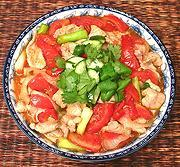

|
Sweet & Sour PorkThailand | ||||
| Serves: Effort: Sched: DoAhead: |
4 w/rice *** 45 min Prep |
Fresh, attractive and delectable, about as far away as you can get from the sticky, acrid, neon red pork of Chinese American take-out infamy - and far more healthy as well. | |||
|
1 2 ------ 3 10 1 2 4 2 1/4 1 1 1 1/4 ------ 1/4 1 1-1/2 1/4 ------ |
# cl --- oz oz c oz T c T T T t --- c T T t --- |
Pork lean Garlic -- Sauce Straw Mushrooms Tomatoes Scallions Chili, red (1) Onion Tomato Sauce Stock Rice Vinegar Sugar Fish Sauce (2) Salt -------- Stock Tapioca Flour (3) Oil Pepper -- Garnish Cilantro leaves Cucumber slices |
Prep - (30 min)
|